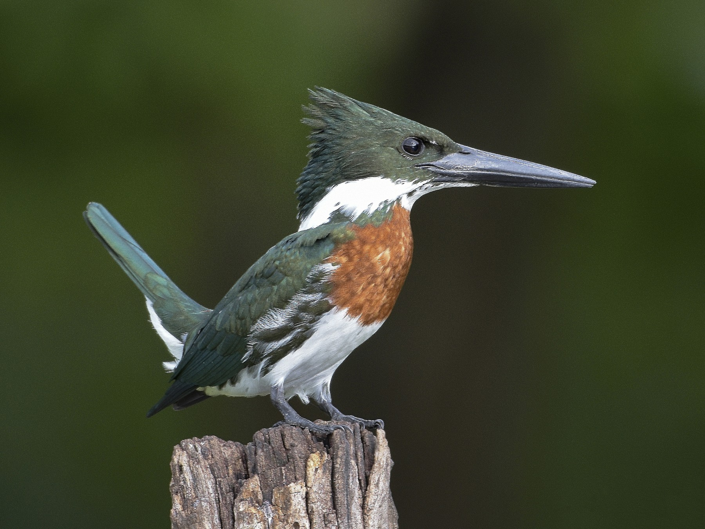

Amazon Kingfisher desenhado em SVG
Desenho da ave Amazon Kingfisher feito em SVG. O desenho é formado por 70 polígonos e 1 círculo.

Desenho da ave Amazon Kingfisher feito em SVG. O desenho é formado por 70 polígonos e 1 círculo.
Para esta parte do trabalho, escolhi fazer um desenho de uma das minhas aves favoritas. O Amazon Kingfisher.
O Amazon Kingfisher (martim-pescador-verde), é uma espécie de ave encontrado em grande parte da América do Sul. Ele possui uma plumagem brilhante e colorida, com asas e cauda azuis-verde e peito laranja brilhante, cabeça é azul-esverdeada com uma mancha branca na garganta, e seu bico é longo e afiado.
Como o nome sugere, o martim-pescador-verde é especialista em pesca, e é frequentemente visto perto de rios, lagos e córregos. Ele é capaz de mergulhar na água em busca de peixes, crustáceos e outros animais aquáticos.
Para construir o desenho em SVG, primeiro escolhi uma imagem do Amazon Kingfisher (imagem acima) e depois a converti para SVG utilizando uma ferramenta do Adobe Express: Converter PNG em SVG. Depois disso, carreguei a imagem convertida no VS Cde e utilizei a extensão "SVG" para criar e visualizar polígonos, que mais tarde iram formar o desenho.
A extensão disponibiliza uma régua e cursor especial, o que permite indentificar as coordenadas dos polígonos a serem criado com maior facilidade. É possível notar alguns polígonos que se sobrepõem na imagem acima, mas isso não será um problema pois ao colorir os polígonos não será possível notar a sobreposição.

Agora adiciono um círculo com centro aproximadamente no meio do desenho.

Para escolher a paleta de cores, removi o fundo da imagem original do Amazon Kingfisher e extraí a paleta de cores utilizando o Adobe Color. Utilizando a mesma ferramenta, obtive cores análogas e sombras para colorir cada polígono com diferentes tons, conforme o que parecia mais adequado para cada polígono.


Já com a paleta de cores, o próximo passo foi colorir cada polígono.
Para colorir o círculo, selecionei uma cor que aparecia no fundo da imagem de referência e de modo que tal cor fosse harmônica com as outras cores utilizadas. E por fim colori as linhas de cada polígono com a mesma cor do polígono em questão. É importante fazer isso ao invés de apagar as linhas pois caso contrario existiriam "vãos" entre alguns dos polígonos.
Por fim, adiciono as respectivas cores às bordas de cada polígono e obtenho o resultado à esquerda.
*obs: Algumas cores utilizadas para atingir o resultado final variam ligeiramente das cores encontradas no
Adobe Color.